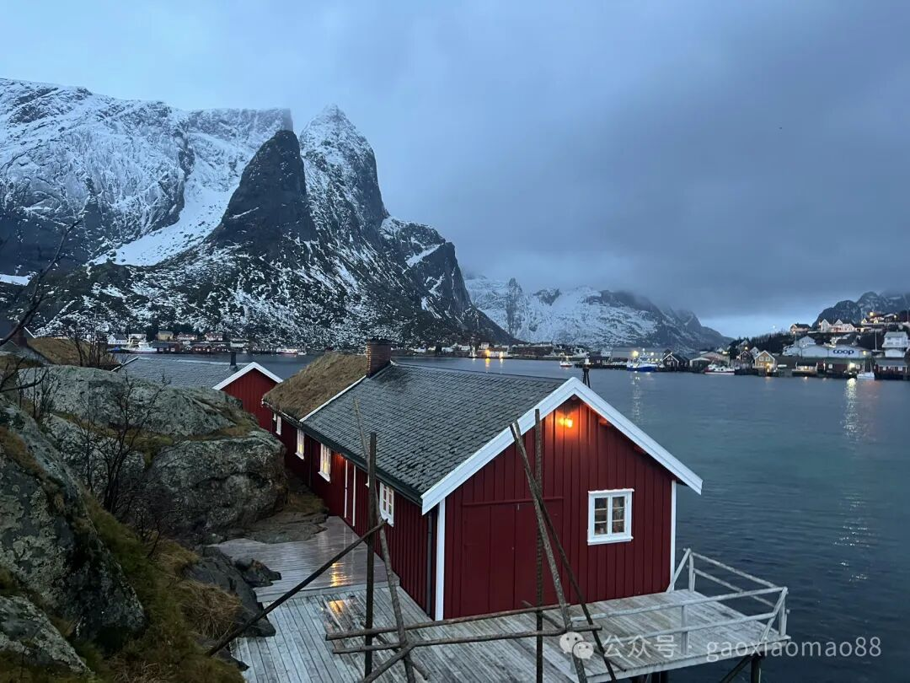
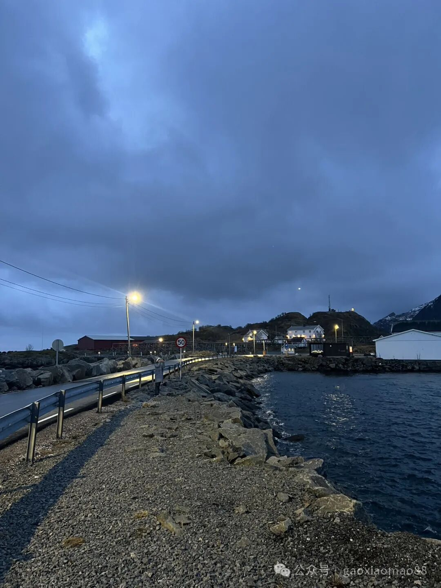
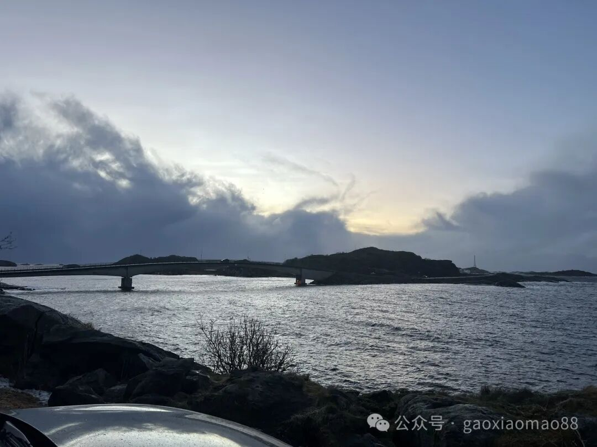
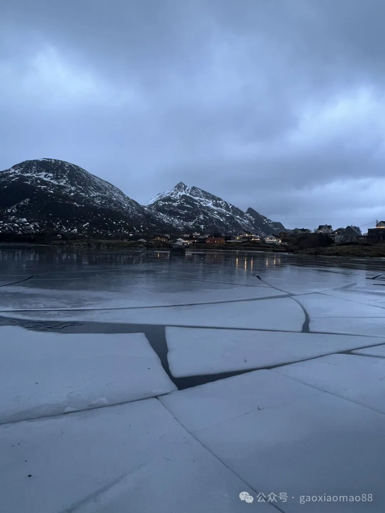
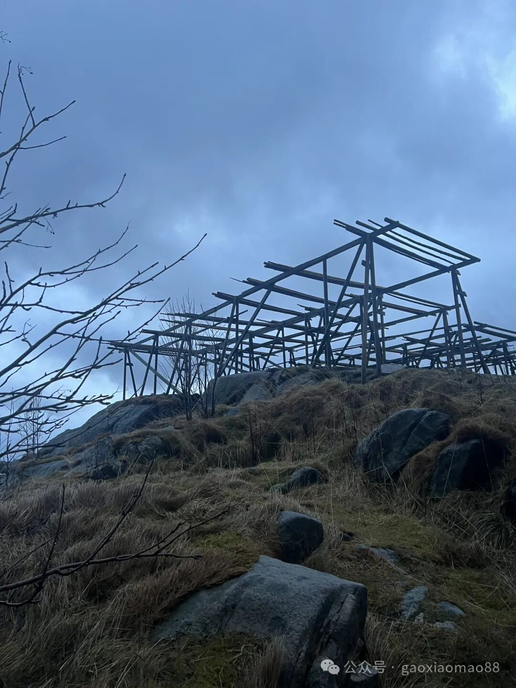

《极昼和极夜是极圈内特有的自然现象。发生在北极圈（北纬66°34'）以北和南极圈（南纬66°34'）以南的地区。》
从小从百科全书里看到的极夜极昼，带给我过一些迷思。到底一个人在这样的自然环境里，会有什么样的感受。
去挪威lofoten，就是为了感受这个。
lofoten岛位于北纬68-69度之间，在北极圈以北，因此有办法体验极昼极夜。同时由于北大西洋暖流，因此在同等纬度的地区里属于不太冷的。同时由于地处海岛区域，有很漂亮的海岸线，因此很适合去看极夜。
我们是从挪威的Olso飞去的Lofoten岛。lofoten岛有一个代号为EVE的机场，航程大约为2个小时。一开始以为这个地方还是挺小众的，后来发现飞机上1/4都是中国人，小红书上已经颇为流行了。
原本以为的极夜会是一望无际的黑夜，24小时不间断的那种。后来发现极夜还是会有天蒙蒙亮的时候的，类似下图这样。


但是这种时候一天里只有几个小时。大约从8点开始天亮，下午2点天就暗下去，4点就全黑了。于是每天的两点就有一种晚上7点的体感，4点就有半夜的体感，人的生物钟也对应地很容易很早就开始困了，想要睡觉或者做晚上想做的事情。
我们在Lofoten岛上的时间是12/24-12/29，特意挑选了月亮也很少的时候。那几天的月相如下：
Dec1:, 8:, 15:, 22:, 30:
24号到30号的月亮几乎是最少的，那几天我们也完全没有看到月亮。有点遗憾的是那几天一直乌云密布，下了很多雨和冰雹，因此在外面能活动的时间很少。
在这里生活的几天其实让我很感恩平时湾区的阳光。在这样一个一直阴雨，没有阳光的地方生活，整个人都一直觉得困困的，醒来一会儿就想睡觉。不过可能这样人也更容易放松下来，更多地休息一下。在lofoten这几天我平时紧绷的神经明显放松了不少。
据说这里的人在极夜的时候大部分都在家里呆着，很少出去上班。然后等到极昼的时候才更多地出门上班，在外面活动。气候决定经济形式一定角度上也是有道理的。


